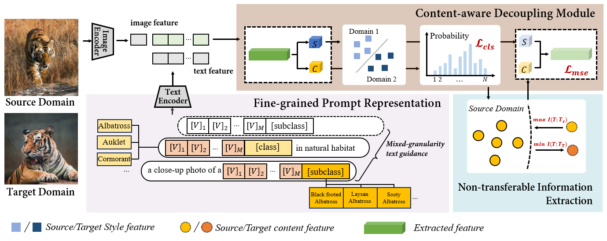
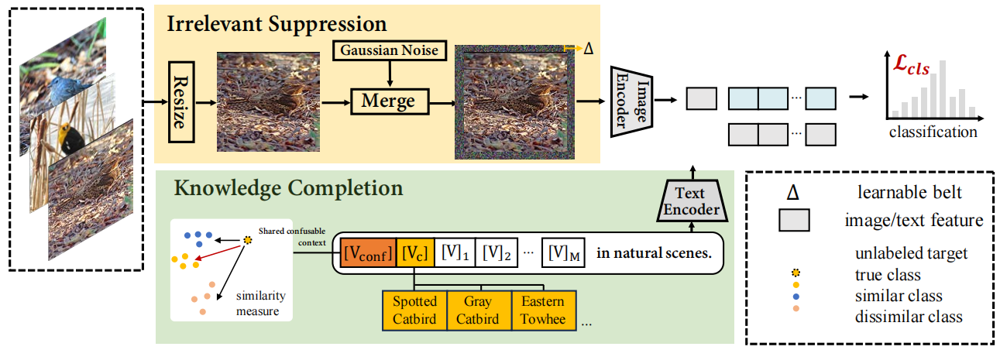
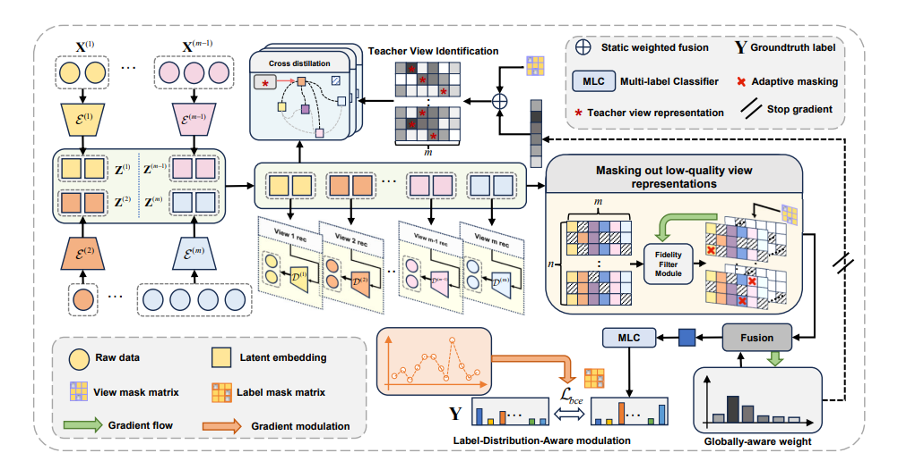

CNIE: Content-Aware Non-Transferable Information Extraction for Fine-Grained Visual Categorization
IEEE Transactions on Multimedia (TMM), CCF-A, accepted.
First AuthorPaper
I am currently an undergraduate student at Beijing Jiaotong University. I will join Harbin Institute of Technology, Shenzhen and Beijing Zhongguancun Academy as a direct Ph.D. student in 2026.
My research focuses on micro-visual computing and multi-view multi-label learning, with applications in fine-grained visual categorization, robust visual recognition, and model intellectual property protection.

CNIE: Content-Aware Non-Transferable Information Extraction for Fine-Grained Visual Categorization

IKA²: Internal Knowledge Adaptive Activation for Robust Recognition in Complex Scenarios

Cross-View Distillation and Adaptive Masking for Incomplete Multi-View Multi-Label Classification
Email: 15290340197@163.com
GitHub: https://github.com/ddglqq